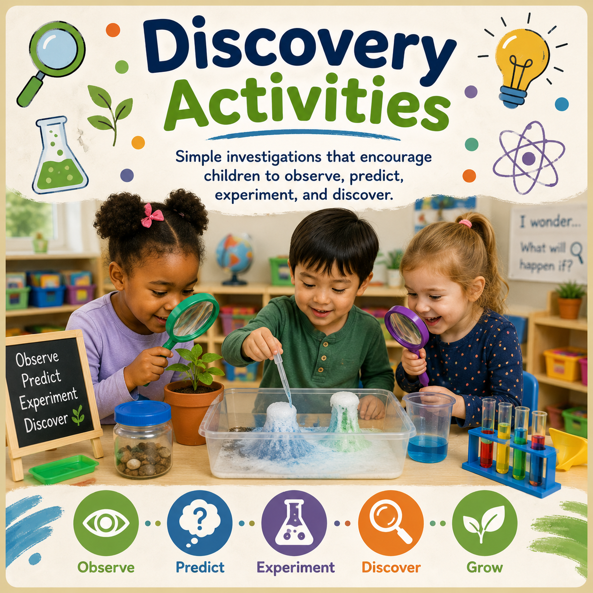

Sensory
Sensory Exploration
Textures, sounds, colors, and movement invite children to investigate with their whole bodies.
Discover engaging activities created for Early Head Start, Head Start, Preschool, and Pre-K classrooms. Children learn through play, exploration, creativity, and meaningful hands-on experiences.

Choose experiences that match children's developmental stage while leaving room for individual interests, abilities, and curiosity.
Sensory exploration, movement, communication, and early relationships.
View Activities →Building language, curiosity, confidence, and early problem solving.
View Activities →Creative play experiences that strengthen early learning skills.
View Activities →Hands-on experiences that support kindergarten readiness and growing independence.
View Activities →Pair activities with studies and classroom themes to deepen children's exploration.
Textures, sounds, colors, and movement invite children to investigate with their whole bodies.

Simple investigations encourage children to observe, predict, experiment, and discover.

Open-ended art builds creativity, fine motor skills, confidence, and self-expression.

Stories, songs, conversations, and playful literacy experiences grow vocabulary.
Children can enter learning through the materials, spaces, and experiences that capture their attention.
Children build, design, measure, and solve problems.
Develop language, imagination, and social skills through role play.
Pour, measure, compare, and investigate materials.
Explore materials, process, creativity, and self-expression.
Count, compare, sort, measure, notice patterns, and reason.
Investigate textures, movement, sound, and materials through hands-on exploration.
Use these activity categories as invitations, then adapt them to the children in front of you.
Fill a bin with safe, varied materials and invite children to scoop, sort, compare, describe, and create.
Invite children to investigate color mixing, light, patterns, and changes through playful experiments.
Offer blocks and loose parts with a simple challenge that encourages planning, testing, revising, and persistence.
Preparation is important, but observation is what helps teachers know where to go next.
Choose materials and arrange the environment so children can enter the experience independently.
Notice children's words, strategies, questions, relationships, and persistence.
Add a question, material, book, or new challenge that builds from children's interests.
Seasonal experiences can connect children with nature, classroom materials, family traditions, and the changing world around them.
Move from an activity idea to a complete classroom experience with studies, lesson plans, printables, and teacher resources.